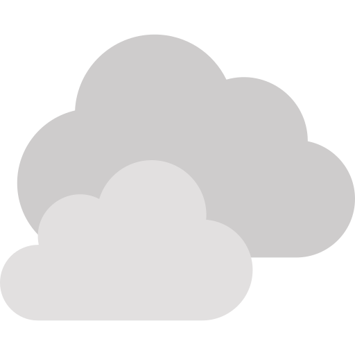
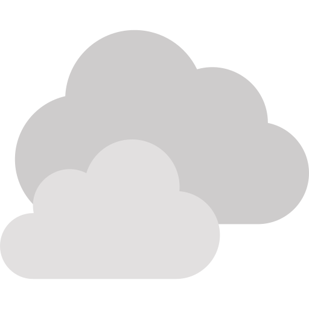
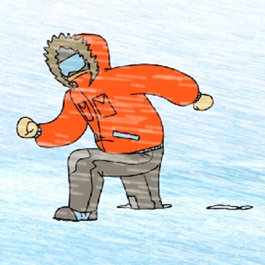

This is Zermatt
What are you waiting for?
Select your mood!
 

Zermatt ~ Introduction
Zermatt is one of the most beautiful cities to visit in the world. This city in Switzerland offers many activities and will keep all his visitor busy!
Zermatt ~ Things To Do!
1. MOUNTAIN CART!
One of the most popular activities that visitors can do is to experience a three wheel down the mountain!
- Suitable for children 9 years + .
- The offer is only available during summer times.
- A helmet is always required.
- Good brakes and quality equipment is provided.
Click for more info: Cart

3. RESTAURANT ADLER HITTA
The Adler Hitta is located directly on the ski slope and the Sunnegga-Findeln hiking trail. With our various panoramic terraces, you can enjoy a breathtaking view of the Matterhorn at a table, in a deck chair, or on various sun loungers. If you choose a table inside the Hitta, you don't have to forego the wonderful view thanks to our panoramic windows.
Click for more info: Adler
2. SKIING 365 DAYS!
Zermatt is a favorite for many winters enthusiastic. Usually their resort is open 365 days and many people around the world come to zermatt just to ski! But be aware that the elevation at zermatt is 5,310 ft!
Click for more info: Skiing